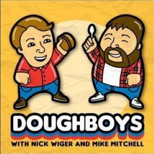
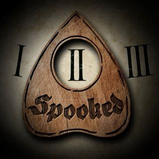
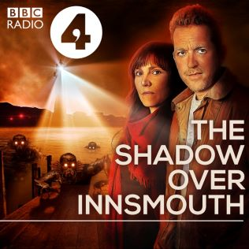
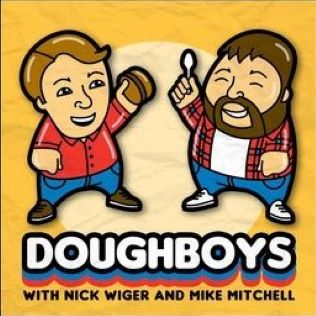
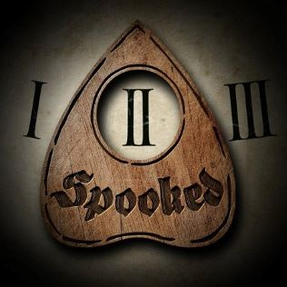
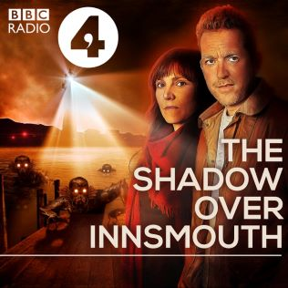
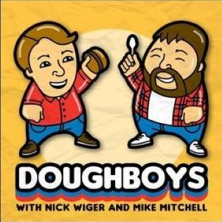
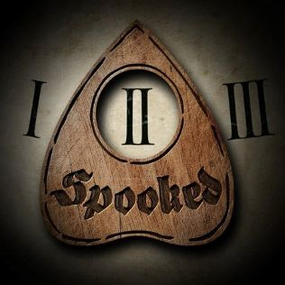
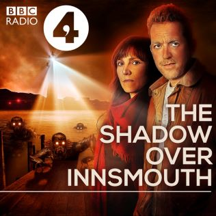
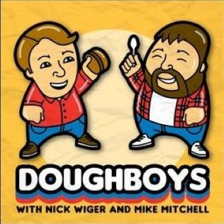
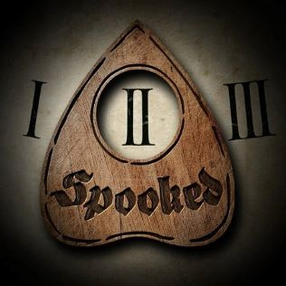
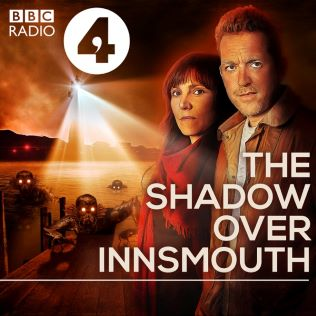
"Jonathan Sims, newly appointed head archivist of The Magnus Institute, attempts to bring a seemingly neglected collection of supernatural statements up to date by converting them to audio.
Individually, the statements are unsettling. Together they begin to form a picture that is truly horrifying because as Jonathan looks into the depths of the archives, something starts to look back…
Nick Wiger and Mike Mitchell are two comedians who review fast food chains, and food in general. While this seems like a pretty basic premise, this is trhe funniest podcast I have ever listened to.
Do Nick and Mitch like each other, the food they eat, or their own podcast?
...No but once you listen you'll see why this show is in my favorite of all time.
Spooked is a show, hosted by Glynn Washington, that explores experioence real people have had with the supernatural. While some of the stories can be hit or miss,
this shows is an all time favorite still.
I have so many memories of my wife and I, while we were still dating, riding around late at night listening to this show and having so much fun. so for that it will alway be in my top of list.
The Lovecraft Investigations is a 3 season audiodrama produced by the BBC. It takes 3 classic Lovecraft stories and brings them to present day
and treats them as a real life documentary.
The 3 seasons in order are: The Case of Charles Dexter Ward, The Whiosperer in Darkness, and The Shadow Over Innsmouth. All 3 are excellent and have some of the bestrecording and producing ZI have heard in a podcast.